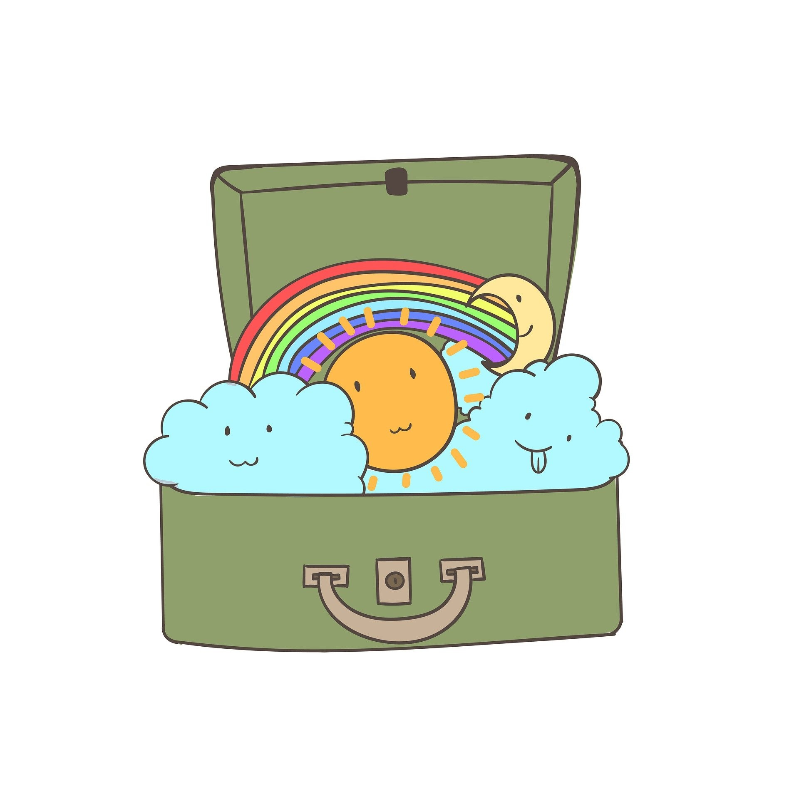

Un viaje para descubrir los tesoros del mar a través del arte
¡Hola, chicos y chicas!
¿Os gustaría navegar y descubrir a fondo el mar?
¡Súbete a nuestro barco! ¡Y no olvides echar en la maleta: una gran sonrisa, motivación e interés, ganas de aprender, de compartir, de crear, de emocionarte...! ¡Vive y disfruta esta aventura!
¡VAMOS A LA PLAYA!

Información general
| Título | MARE-ARTE |
|---|---|
| Descripción | Proyecto sobre el Mar relacionado con la artesanía, destinado a alumnado de Formación Básica Obligatoria de aula específica de Secundaria. |
| Autoría | Ana Gutiérrez Gordillo |
| Licencia | creative commons: attribution - share alike 4.0 |
Este contenido fue creado con eXeLearning, el editor libre y de fuente abierta diseñado para crear recursos educativos.